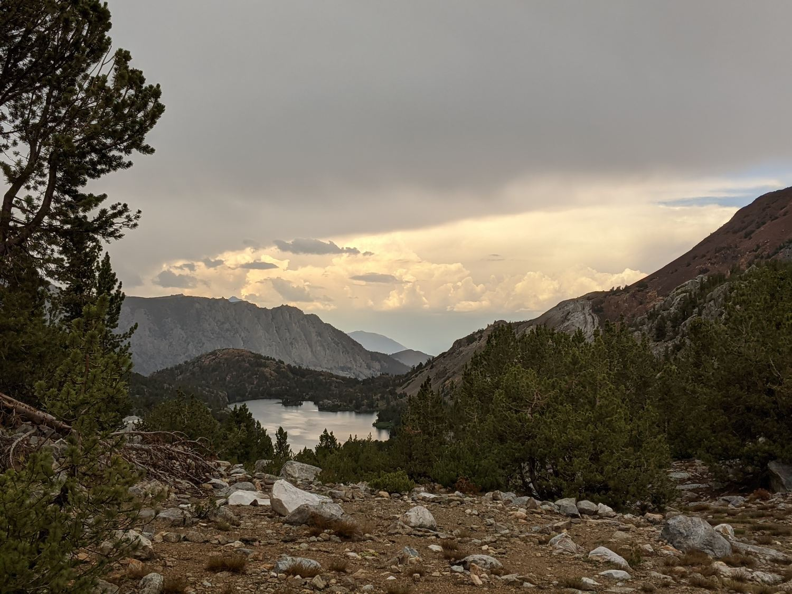

Bishop Pass, Dusy Basin, and Knapsack Pass
Youtube video link Participants: myself, Hagen Zhang, and Jonathan Wong (first time!){kind=link}
We left San Jose at around 2pm, driving through Yosemite as the sun set around 8pm. The rain began to pick up to a slight drizzle around the time we crossed Tuolumne Meadows. We stopped for gas at the Tioga Pass Gas Mart.
We decided to sleep for the night at June Lake, hoping that there would be some campsites open. Fortunately, there were, so we set up our tent in the dark and went to sleep.
{kind=link}
Our campsite at June Lake
We woke up as early as we could and got on our way to Bishop. In Bishop, we stopped to eat at the Taco Bell before heading up to South Lake. Already, the clouds were beginning to fill the sky despite it only being 9am. (Typically, Sierra mornings are cloudless, with clouds beginning to pack the sky only in the afternoon if there is a thunderstorm coming.) We knew it would be a strange weather day.
On the trail, we met one ranger (who checked our permit), a father backpacking with his daughters, and a group of young girls with some friendly dogs that followed us for some time.
As we anticipated, it began to rain steadily at around noon. We hunkered beneath a couple of pine trees next to the trail. For some reason, I was the only person prepared with rain gear - a bad sign! We sat in the rain, getting pretty wet while listening to music. The rain stopped after about an hour, and we set off hiking again. The rain would begin again around an hour later, after which we sought shelter again. Gradually, as we grew wetter and wetter, we became more and more indifferent to the rain and sometimes opted to simply hike through it.
We were generally too focused on beating the rain to fully appreciate the scenery around us. But the lakes and mountains on the approach to Bishop Pass were generally pretty plain (not in their own right but rather in comparison to what we were expecting to see later).

{kind=link}
Looking north at some point during the approach to Bishop Pass
Unfortunately, Jonathan slipped during a stream crossing near Bishop Lake and was forced to continue with soaked shoes. It was disappointing and hurt our pace but not too dangerous in the generally mild temperatures.
{kind=link}
{kind=link}
Rain drops in a small pool near Bishop Lake
The switchbacks up Bishop Pass were rocky but well constructed and very nicely graded. Mt Agassiz loomed largely above our heads, constructing a dark figure against the gray rain clouds. We were lucky to only encounter one snow patch on the trail.{kind=link}
Switchbacks up Bishop Pass
There were many deer skeletons strewn about on one switchback on the north side of the pass. I had only heard of the deer carcasses on Shepherd Pass, so I was surprised to see some here as well. We had an interesting time speculating the cause of death.
{kind=link}
A deer bone
We were lucky to have the rain stop just as we topped out on the pass. Right on queue, the sun came out as the deep backcountry of Kings Canyon NP appeared in the horizon.{kind=link}
Holding the Bishop Pass sign
We descended the pass quickly into Dusy Basin, eager to find a campsite as soon as possible. We camped at the west side of the lake closest to Bishop Pass, elevation 11345'. For dinner, we ate Shin ramen with bagged tuna mixed into it. It tasted very bad! However, the sunset over the Palisades was particularly beautiful, and the lake was extremely still that evening.

{kind=link}
{kind=link}
{kind=link}
{kind=link}
{kind=link}
Looking south towards Giraud Peak (large left) and Wheel Mountain (small pointy on right)

My apologies for the excess of almost identical photos.
The next morning, we set off early (but not that early) towards Knapsack Pass. We left our packs at our campsite. I ate a tasty breakfast of flavor-blasted goldfish and wheat thins and felt well-fueled for the day-hike ahead of us.
We contoured at approximately the same elevation towards Lake 11306' (approximately between Isosceles and Columbine). The constantly changing appearances of Columbine and Isosceles were pleasing to look at as we made our way through the basin. We passed through all kinds of terrain, including areas populated with whitebarks, rocky plateaus above the lakes, and grassy meadows near the lake outlets and inlets. We stopped to fill up water just before we headed up Knapsack Pass. We chose a poor approach to Knapsack Pass, choosing to contour without losing elevation from the northwest instead of dropping down and heading up the pass due west. The easiest way to get up Knapsack Pass is to follow the gully, possibly with a little bit of water and some grass. Our method forced us to scramble many large boulders, which was definitely really fun but also inefficient.
{kind=link}
Around halfway up the pass, we stopped to eat some food. We passed a family who was heading down, who warned us about the daily rain. Not that we weren't also expecting the rain. We debated whether to head back or not, and we chose to go over the pass in spite of the rain.
{kind=link}
Looking back towards Dusy Basin
As we neared the top of the pass, the rain began to pick up. Very conveniently, we found a great shelter to sit in while hiding out the rain.
{kind=link}

{kind=link}
A selfie with North Palisade looming behind me in the clouds.
We also saw an interesting wildlife camera at the very top of the pass. My guess was that a researcher would place a camera at pass because passes have the highest probability of receiving wildlife traffic. After searching up the name of the man listed on the camera, I found this article that may be relevant: link.
{kind=link}
{kind=link}
Looking back to the west from the top of the pass. Black Giant is the tallest on the left, while Mt. Warlow is the peak in the center.
The way down the east side of Knapsack was very easy. There were many grassy ledges that effectively formed switchbacks going down the pass. Just be sure to descent (and ascend) on the south side of the east face of the pass.
Contemplating the best approach for the descent as the impressive rainclouds rolled over the Sierra Crest.
We decided that we didn't have enough time to explore the Barrett Lakes, since our pace was too slow to safely get back before dark. So we just stopped below the pass to fill some water, and we went right back up the pass again.
{kind=link}
North Palisade was even more impressive from Palisade Basin.
On the way back, we chose the smarter way down the west side of Knapsack Pass. (With one exception: I downclimbed a pretty sharply angled slab just for fun. Which I shouldn't do.)
We headed down the southernmost chain of lakes in Dusy Basin, since we wanted to hike back along the Bishop Pass trail this time. The mosquitoes began to hit hard as we descended back to treeline and the sun began to lower in the sky. My legs were also starting to give out from aching, since Hagen forgot to pack the ibuprofen in his daypack. But our pace was not that slow.
Along the Bishop Pass trail, the constantly changing perspectives of North Palisade and Isosceles Peak were interesting to look at, and also a great gauge of where we needed to turn to get back to our campsite. We made it just before sunset.
{kind=link}

Preparing my dinner with Agassiz, Winchell, and Thunderbolt behind me illuminated in the last light.
{kind=link}
That night we ate Neoguri, which went much better with the tuna. Next time, I probably wouldn't bring tuna as a supplement. But I would consider chicken.
The following morning, we woke up at the crack of dawn and headed back to the trailhead as quickly as we could (or as quickly as Jonathan could Haha). We made it well before Hagen's expectation, but generally in line with mine. Everybody hikes faster on the last day.
Actually, on the way back we made a very careless wrong turn. Branching from the Bishop Pass trail, there is a loop that goes to Chocolate Lakes, ending at Long Lake. After going past Long Lake, we made a very bad error and accidentally went on the Chocolate Lakes Loop, which would've taken us right back to Long Lake. We were so fortunate that an old lady stopped us to ask where we were going, promptly turning us back in the other direction. However, the rant about always using a paper map (when I had an even better map downloaded on my phone) and never purchasing a phone (or, never purchasing something smarter than I am) was not as helpful. XD
Overall, it was a great trip with some really interesting and unpredictable weather. It was probably not the best condition for a first-time trip for Jonathan, but it was thorougly interesting and scenic for me and Hagen. My favorite part was, as always, the rock hopping up Knapsack. Also, finally being able to see the classic sunset view over the Palisades was incredible.